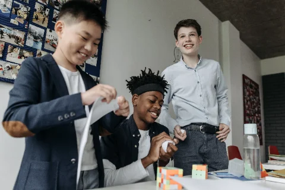

Chat with Scout, your AI business mentor. Hunt an idea, test it for real, come back and grab your printable business plan. That's it. That's the site.
Mowing crews, ice-cream stalls, detail kings. You're next.

No fees, no catch. Your savings stay yours until YOU decide to spend them.
No email, no password. You get three words like sun-dance-flower — type them in on any device to pick your hustle back up.
Test your idea with real customers, come back with the results, and print your one-page plan.
Enter your code or upload your code file.
Love the energy — your plan's all yours, no gatekeeping. But here's the real deal: the best founders test their ideas first. Go sell to 10 real customers this week, offer a discount as a trial, collect the yeses AND the nos. A plan built on real experience beats one built on guesses every time. Test your idea, come back with real results, and regenerate this plan — it'll be 10x stronger!